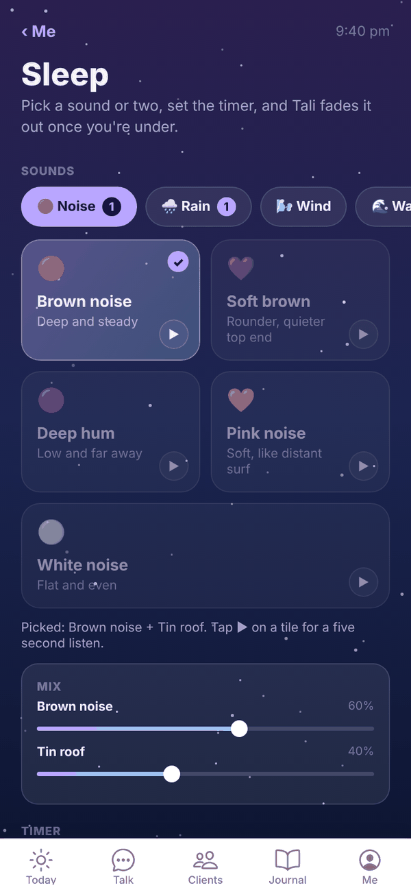
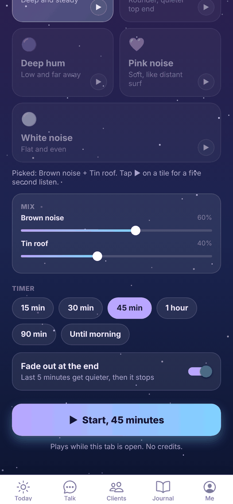
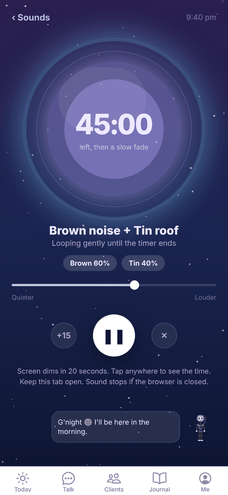

Tali HQ guide
Sleep sounds and wind down
Pick a sound or two, set a timer, and let Tali fade it out once you're asleep.
Sleep plays calming sounds while you drift off: rain, wind, water, fire, night sounds, hums and noise. Mix any two, set a timer, and Tali fades it out at the end. It's on every plan and uses no credits. Free
Open it from Me, Sleep, or tap Sleep sounds on Today after you've shut the day down. See Shut the day down and night mode.


The sounds#
Swipe along the row of categories and tap one to see its sounds. A number on a category shows how many you've picked from it.
| Category | Sounds |
|---|---|
| Noise | Brown noise, Soft brown, Deep hum, Pink noise, White noise |
| Rain | Tin roof, Thunderstorm, Light rain, Heavy rain, On the window |
| Wind | Mountain wind, Through the trees, Gusty, Cold night, Gentle breeze |
| Water | Ocean, Beach, Creek, River, Lake |
| Fire | Campfire, Fireplace, Crackling, Bonfire, By the sea |
| Night | Crickets, Frogs and crickets, Frogs, Night forest, Curlew |
| Hum | Ceiling fan, Box fan, Air con, Train, Plane cabin |
Play a sound#
- Tap ▶ on any tile for a five second listen. Tap ■ to stop it.
- Tap a tile to pick it. A tick shows. You can pick up to two sounds, from any categories.
- With two picked, a Mix box appears. Slide each one to set how loud it is against the other.
- Under Timer, pick 15 min, 30 min, 45 min, 1 hour, 90 min or Until morning.
- Leave Fade out at the end on to have the last 5 minutes get quieter before it stops (needs a timer).
- Tap Start. The button shows the timer, for example Start, 45 minutes.
Your sounds, timer and volume are remembered for your account, so they're ready next time on any device.
While it plays#

- The big circle counts down the time left, or shows ∞ for Until morning.
- Slide between Quieter and Louder to set the volume.
- +15 adds 15 minutes. The middle button pauses and resumes. ✕ stops it.
- The screen dims after 20 seconds. Tap anywhere to see the time and the controls again.
- ‹ Sounds goes back to the sound picker without stopping the sound. A Now playing bar there takes you back to the timer.
Questions#
Does Sleep use credits?
No. Sleep is free on every plan.
Can I play more than two sounds?
No, two at a time. Picking a third replaces the first one you picked.
The sound stopped when I locked my phone.
In a browser, sound plays while the Tali HQ tab is open. If your phone stops it when the screen locks, leave Tali HQ open on screen; it dims itself after 20 seconds.
Can I use Sleep without shutting the day down?
Yes. Open Me, Sleep any time.